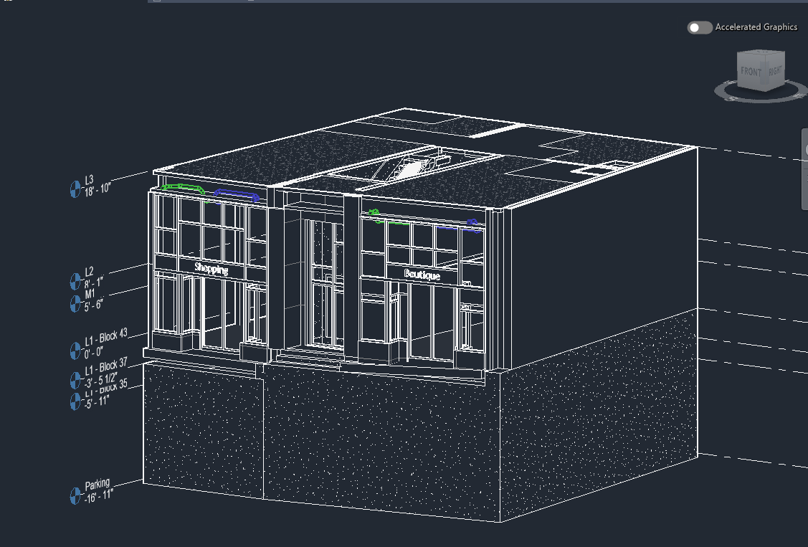

Outputs below are recorded project evidence. Separate “View document” links identify available documents; an output name alone is a record, not a missing download. Native working files and exports are available in the download directory.
ST-VDC-01 / Project history
How the project developed
The project tracker recorded a goal, work, output, evidence and next action for each session. This history brings those records together by phase. Early counts and layouts describe their original milestones; later sessions record the changes.
← Back to the projectS01–S04
Define the project
Brief, model register, zone and working rules.
S01Write and approve the project briefSep 26, 2026 · Complete
Defined the purpose, bounded scope, deliverables and completion criteria in the project brief.
- Work planned
- Confirm narrative, audience, scope boundaries, limitations, and final deliverables.
- Output recorded
- ST-VDC-01 Project Brief v001
S02Inventory source modelsSep 27, 2026 · Complete
Registered seven Autodesk models and established how the source files would be used and preserved.
- Work planned
- Acquire and catalog Architecture, Structure, Mechanical, and Plumbing models; record versions and link readiness.
- Output recorded
- Source Model Register
S03Select the exact capstone zoneSep 28, 2026 · Complete
Selected the P05 / Retail 109 vertical slice for its equipment area, overhead route and meaningful transition between levels.
- Work planned
- Inspect candidate levels; compare congestion, room suitability, and manageable scope; draw scope boundary.
- Output recorded
- Zone Selection Board
S04Create the execution planSep 29, 2026 · Complete
Set model-ownership, template, naming, view and evidence rules. Deferred placement and routing decisions until the linked baseline could be reviewed.
- Work planned
- Lock folders, naming, model/view/sheet matrix, assumptions, routing rules, capture method, backups, and phase review process.
- Output recorded
- BEP-Lite + Gate 0 review
S05–S09
Establish the model
Links, equipment, devices and schedules.
S05Create and audit the working modelSep 29, 2026 · Complete
Created the original Electrical-Default project, verified Imperial length units, saved the working RVT and reopened it.
- Work planned
- Create an original electrical RVT from the Imperial Electrical-Default template; confirm units, save location, and clean reopen. Coordinate levels against references during S06.
- Output recorded
- ST-VDC-01_Electrical_Isaak_v001.rvt
S06Link and align disciplinesSep 30, 2026 · Complete
Linked architecture and HVAC, repaired the ARCH relative path, aligned reference levels and checked grids and geometry in plans, section and 3D.
- Work planned
- Link available models; verify level/grid alignment; create coordination, plan, section, and 3D views.
- Output recorded
- Linked baseline model


S07Place electrical-room equipmentOct 1, 2026 · Complete
Placed the two panels, disconnect and transformer, checked unique equipment identities and documented the initial layout.
- Work planned
- Place two panels, transformer, and disconnect; set marks/names; verify access and visible clearances.
- Output recorded
- Equipment layout v001
S08Place devices and junction boxesOct 2, 2026 · Complete
Placed and identified six receptacles and two junction boxes. The two-box record is historical; S10 reduced the scope to one box.
- Work planned
- Place 8–12 devices/J-boxes in the scoped zone; assign marks and useful parameters.
- Output recorded
- Device/J-box layout
S09Establish electrical relationships and scheduleOct 3, 2026 · Complete
Built and reviewed equipment and device schedules, receptacle circuits and panel/transformer relationships. Closed the model-foundation phase.
- Work planned
- Create appropriate circuits or panel relationships for demonstration; create equipment/device schedule; run warnings review.
- Output recorded
- Equipment schedule + Gate 1 review
S10–S14
Develop the raceways
Equipment connections, riser, rack and tray.
S10Route primary conduitsOct 6, 2026 · Complete
Developed the first equipment-room routes and the riser to one Level 1 junction box. Isolated the view, compared elevation references and documented two intentionally unused connector ports.
- Work planned
- Create initial routes from equipment toward corridor distribution using documented sizes and elevations.
- Output recorded
- Primary conduit layout v001
S11Build the overhead conduit rackOct 7, 2026 · Complete
Modeled three 2-inch EMT runs at 4-inch centers on a 16-inch channel. Developed the transition from J1 into the rack and worked around HVAC and slab geometry.
- Work planned
- Create a multi-conduit rack, consistent spacing, fittings, and repeatable organization.
- Output recorded
- Conduit rack assembly v001
S12Resolve elevations and offsetsOct 7, 2026 · Complete
Reviewed bends, elevations and reference levels in section. Distinguished centerline measurements from surface clearance and preserved the intentional continuation endpoints.
- Work planned
- Add vertical transitions, bends, and offsets; verify in sections; document routing rules and exceptions.
- Output recorded
- Coordinated conduit geometry v002
S13Model cable tray and branchesOct 9, 2026 · Complete
Modeled the 12 × 4-inch L-shaped wire-mesh tray, documented its elevation and route limits, and improved E101’s annotations and contrast.
- Work planned
- Create one L-shaped main data tray route with a horizontal bend. Coordinate with the conduit rack and HVAC. Additional branches and remote source/destinations are outside the modeled scope.
- Output recorded
- Cable-tray layout documented on E101 v002
S14Run model QA and approve routing phaseOct 10, 2026 · Complete
Reviewed route continuity, identity data, local separation dimensions, tray properties and representative supports. Closed the educational routing phase.
- Work planned
- Review warnings, disconnected fittings, marks, elevations, sections, and 3D readability; update schedules.
- Output recorded
- Routing QA record + Gate 2 review
S15–S18
Review coordination
Navisworks tests, corrections and issue records.
S15Federate models and document the first clash reviewOct 10, 2026 · Complete
Federated the RVT and linked models in Navisworks, built discipline and support sets, and ran 13 zero-tolerance hard tests. Six related wall-routing findings remained active for correction.
- Work planned
- Install Navisworks Manage. Open the working RVT with linked models. Verify import scope and build coordination sets. Run hard-clash tests, review findings, document decisions, remove unwanted supports, refresh and update all tests.
- Output recorded
- RVT-linked NWF coordination model with 13 current hard-clash tests and documented findings
S16Consolidate the initial review and begin wall-route correctionsOct 10, 2026 · Complete
Preserved the initial review, grouped the wall-route findings, concealed the risers, revised the elbows and retested. The original elbows became Resolved; intentional concealed-wall contacts were Approved.
- Work planned
- Use the 13 tests already completed in S15. Group the six related wall-routing findings by actual routing cause, assign issue IDs, preserve before views and export the initial report. Correct wall routes in Revit, refresh Navisworks and retest affected pairs.
- Output recorded
- Initial clash report, grouped issue log and first correction/retest evidence
S17Document equipment and junction-box troubleshootingOct 10, 2026 · Complete
Assembled the equipment-arrangement and J1 transition stories from earlier Revit screenshots. These document modeling troubleshooting alongside the formal clash case.
- Work planned
- Select retrospective Revit evidence for the panel/transformer arrangement and J1 connection. Record problem, correction and revised geometry.
- Output recorded
- Three-issue coordination evidence PDF
S18Complete retest and close coordinationOct 10, 2026 · Complete
Reviewed the current hard-clash results and the four-page coordination evidence set. Closed the coordination phase with no New or Active findings.
- Work planned
- Review all current hard-clash results, close the issue records, issue the coordination evidence PDF and approve Gate 3.
- Output recorded
- Final clash report, coordination PDF and Gate 3 review
S19–S23
Document the work
Plans, sections, prefab and installation sheets.
S19Finalize E101 Retail 109 raceway coordination sheetOct 11, 2026 · Complete
Finalized E101’s view setup, annotations, references and exported sheet. Removed distracting linked architectural annotation.
- Work planned
- Set view, scale, crop, tags, dimensions, notes, title block, and sheet placement.
- Output recorded
- E101 Retail 109 - Raceways, PDF v004(2)
S20Produce E102 electrical-room equipment sheetOct 11, 2026 · Complete
Produced E102 with the Parking plan, equipment-wall elevation, 3D view, equipment tags and mounting-height information.
- Work planned
- Create the equipment-room plan, wall elevation and 3D view. Add equipment tags, location dimensions and mounting-height note. Arrange views and review PDF export.
- Output recorded
- E102 Electrical Room - Equipment, PDF v001
S21Produce E103 raceway coordination sheetOct 12, 2026 · Complete
Produced E103 with a dimensioned HVAC/raceway section and supporting 3D view. Clarified the conduit-centerline dimension reference and improved linework.
- Work planned
- Document HVAC, tray and conduit relationships in a dimensioned cross section and supporting 3D view. Arrange E103 and review PDF linework.
- Output recorded
- E103 Raceway Coordination, PDF v001(1)
S22Produce PF1.01 prefab build sheetOct 13, 2026 · Complete
Produced PF1.01’s isolated rack, dimensioned hanger section, component callouts and initial BOM. Corrected conduit placement relative to the support channel.
- Work planned
- Isolate the three-conduit rack; document hanger section, 4 in conduit centers, 16 in channel, A/B/C component callouts and hanger BOM; review PDF readability.
- Output recorded
- PF1.01 Conduit Rack - Prefab Build + hanger BOM, PDF v001(2)
S23Produce IS1.01 installation sheetOct 13, 2026 · Complete
Completed IS1.01 and the cover/index. Reviewed the six-sheet baseline and restored missing ARCH/HVAC context by using Print to PDF.
- Work planned
- Create field-oriented sequence, orientation, dimensions, elevations, and references; review full drawing set.
- Output recorded
- IS1.01 Installation Sheet + E0.01 cover/index + six-sheet PDF + Gate 4 review
S24–S27
Revise and close out
Takeoff, FC-01, record model and exports.
S24Finalize material takeoffOct 14, 2026 · Complete
Created MTO-01 from host-model equipment, conduit, tray, fittings and support data. Documented quantity limits and reconciled the modeled support scope.
- Work planned
- Create model-derived conduit, tray, fittings, equipment, and assembly quantities; reconcile obvious gaps.
- Output recorded
- MTO-01 Material Takeoff
S25Issue simulated field change FC-01Oct 13, 2026 · Complete
Preserved FC-01 as the before record for a simulated change from sparse supports to a dimensioned support layout. Identified five affected outputs.
- Work planned
- Create a plausible field-markup instruction affecting routing or equipment location; record reason and impacted outputs.
- Output recorded
- FC-01 Field Change Markup
S26Implement and document FC-01Oct 14, 2026 · Complete
Revised the model to six conduit and eight tray supports, marked H1–H14. Added a 45-degree tray-elbow support and updated dimensions, views and quantities.
- Work planned
- Revise model, affected drawing views and quantities; capture before/after. Final exports, issue annotation and refreshed clash QA follow in S27.
- Output recorded
- Revised model and drawing set
S27Issue record model and exportsOct 14, 2026 · Complete
Issued the seven-sheet Rev01 package. Verified the six-hanger BOM, refreshed coordination, reopened the RVT and checked NWC and a representative 3D DWG. Follow-up on October 15, 2026: Isaak confirmed the CAD exports work correctly.
- Work planned
- Run final QA; create record/as-built issue; export RVT, DWG, PDF, and NWC package.
- Output recorded
- Record package + Gate 5 review
S28–S30
Present the project
Evidence selection, website narrative and final review.
S28Curate portfolio evidenceOct 14, 2026 · Complete
Selected overall, equipment-room and Retail 109 portfolio views and mapped evidence to the presentation outline.
- Work planned
- Select strongest images; write factual captions; map evidence to seven-page outline and CVE responsibilities.
- Output recorded
- Portfolio Asset Board
S29Build and review the portfolio narrativeOct 14–15, 2026 · Complete
Developed and reviewed the website narrative, compact index, project chapters, selected session history and supporting evidence links. The website became the final presentation following review of the initial portfolio PDF.
- Work planned
- Draft the portfolio presentation and supporting records. Review the whole project story, technical claims, images and evidence links. Develop the website introduction, compact index and project chapters from Isaak’s feedback.
- Output recorded
- Reviewed website narrative, selected session history and evidence directory
S30Finalize the portfolio website and close the capstoneOct 15, 2026 · Complete
Incorporated Isaak’s feedback and verified the approved drawing package and supporting links. Isaak accepted v003 and the final drawing PDF, then requested tracker and session-history closeout before the GitHub commit. All 30 sessions are complete and Gate 6 is Approved. Résumé, LinkedIn, outreach and a narrated video remain separate follow-ups.
- Work planned
- Incorporate Isaak’s feedback. Verify the approved drawing package, document links and selected session history. Reconcile tracker completion with the final website scope and prepare the accepted package for GitHub Pages.
- Output recorded
- Approved portfolio website and evidence package; updated tracker and session history; Gate 6 approval
Source: Snowdon Towers Capstone Tracker, Session Plan, Phase Gates, Artifacts, Capture Log, Issues & Decisions and Portfolio Plan. The tracker is retained as the working project record. This page presents selected public project history.